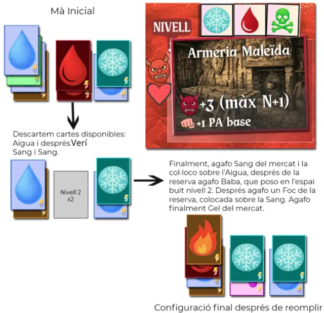

Queda menys d'una setmana. Les proves finals ja estan fetes, els retocs al disseny dels components del joc també, i el manual pràcticament està tancat. Estic content del resultat i tinc ganes de finalitzar aquesta versió per entregar-la. Durant aquestes últimes dues setmanes he estat revisant bé les regles i el disseny per evitar dubtes i que estigui tot molt clar.
Problemes d'escriure el manual "a trossos"
Els canvis que he hagut de fer a les regles no són de fons, cap mecànica s'ha reescrit de zero.
S'havia d'unificar la nomenclatura a tot el manual. Per exemple, cada cop que deia "jugadors" ho he canviat a "alquimistes" perquè sigui més immersiu. En lloc de "fang tòxic" ara diu "verí". I en lloc de "ressonadors", "permutadors", perquè diferents noms no es refereixin a la mateixa cosa. També hi havia "cartes d'elements" i "cartes d'element" en un altre, sense la s. Petites coses que passen desapercebudes per a qui escriu, però que l'alquimista les nota. Un manual que anomena la mateixa cosa de dues maneres diferents transmet la sensació que ningú l'ha rellegit mai.
L'altra correcció era la de la persona gramatical. El text anava passant de la segona persona del singular al plural, i de la primera persona a la tercera, sense cap criteri. Resultat, un manual que sonava com si l'haguessin escrit quatre persones diferents que no s'havien parlat mai entre elles. Quan una regla diu "has de tirar el dau" i la següent diu "l'alquimista pot descartar", es crea una sensació extranya, em parla a mi el manual o està descrivint els processos en general? Així que vaig unificar-ho tot a la segona persona del plural. Més directe, com si expliqués el joc als jugadors que seuen al voltant de la taula per jugar.
Il·lustrar les regles, problemes tècnics

També he preparat imatges noves per il·lustrar els exemples del manual. Com s'agafen cartes, com s'ataca, com ataquen els enemics, com es llancen els conjurs. Tot fet a mà amb Photoshop, sense automatitzar res, perquè volia que cada imatge tingués el to just i una estètica coherent amb el món del joc. D'una hora a l'altra, els PSD que tenia oberts van deixar de respondre. Vaig provar d'obrir-los amb altres programes, vaig buscar tutorials, però res. Les capes, els textos, les màscares, tot plegat es va convertir en un error que cap programa sabia interpretar.
Va ser un mal de cap considerable. Per sort les versions exportades es podien fer servir, així que les imatges finals estan salvades. Però les capes editables s'havien perdut. Qualsevol opció de retoc en el futur haurà de passar per edició de la imatge exportada, cosa poc desitjable però al final només és un prototip., no cal que sigui molt bonic.
El mateix paràgraf, quinze vegades
Quan miro enrere, des d'aquell abril de 2025 en què va començar tot, penso en quantes vegades he reescrit les regles. No només les normes en si, sinó la manera d'explicar-les. Hi ha fragments que he reescrit deu, quinze, vint vegades. Hi havia decisions que semblaven clares sobre el paper i que, a l'hora de transmetre-les, resultaven un embolic. El joc era divertit, però les instruccions el feien passar per complicat, i un joc que arriba complicat no convida a provar-lo.
El més difícil no ha sigut inventar regles. El més difícil és fer que una regla s'entengui a la primera, que sembli fàcil i òbvia, fins i tot quan intentar explicar-la la complica. I si una norma és molt difícil d'explicar, potser és que la norma en si és difícil. Això em feia plantejar fer-hi canvis, però al final no ho he vist necessari. Només havia d'endreçar les idees.
La capsa de les novetats, tancada
Curiosament, en aquest tram final no he canviat cap regla. En tinc al cap, mecàniques que voldria provar, idees que em ronden mentre faig altres tasques. Però no és el moment. Quan el lliurament és a tocar, el pitjor que pots fer és obrir la capsa de les novetats. Ja tinc prou feina amb assegurar-me que tot encaixi, que no hi hagi errors ni referències creuades que no portin enlloc. Les idees noves esperaran la propera versió. O potser mai arribaran.
Un manual que ja camina sol
Al final, el que més m'agrada de tot aquest procés és la sensació que les regles ja no són meves. Després de tantes revisions, el text ha deixat de ser un document que jo controlo per convertir-se en una eina que qualsevol podrà fer servir. Que les regles no necessitin de mi per ser compreses, que el joc funcioni sense que jo hi sigui al davant explicant-lo. Quan això passa, és senyal que està llest. I jo crec que estem a punt.